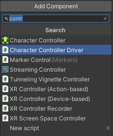

Unity components
Unity components are used to define and adjust various dynamic and interactive features. Please note that if you modify the 3D model, the component information may be lost if the hierarchy or name of its attached object is changed.
Add and Remove Components
To add a component to an object (or multiple objects) you need to select it (or them) and then on the Inspector panel, click on Add Compoenet. A list will appear where you can type the name of the component. For removing a component, you click on the three dots on the right of its header and select Remove Component from the menu.

Marker's list
Here's the list of the main components used by Tames:
General and options:
| Component name |
Description |
| Marker Setting |
|
| Publish project |
The Publish Project component contains data necessary to present your project online. This component is attached to the object Rig in your scene. |
Base interactions
| Component name |
Description |
| Input Setting |
Input settings allow you to set when a control should be activated. |
| Marker Carrier |
|
| Marker Dynamic |
|
| Marker Info |
|
| Marker Person |
This component designates an object to function as the head of a person. |
| Marker Root |
|
| Marker Teleport |
|
| Marker Walk |
|
Element definition
| Component name |
Description |
| Marker Alternative Object |
|
| Marker Alternative Material |
|
| Marker Changer |
The properties of lights and materials are set by Marker Changer components. |
| Marker Control |
Marker Control component sets update controls for certain properties. It is possible to have more than one component for each element. |
| Marker Custom |
|
| Marker Material |
|
| Marker Progress |
The Marker Progress component controls most of the progress of an element. |
| Marker Score |
|
Complex 3D elements
| Component name |
Description |
| Marker Cycle |
|
| Marker Link |
|
| Marker Queue |
|